执行摘要
这份数据里 9,004 笔已结清的 LendingClub 贷款，有 16.8% 以坏账收场。审批模型的两种错误并不等价：漏判一笔违约平均损失 $9,437 本金，误拒一笔好贷平均放弃 $2,243 利息，成本比 4.2:1 直接从还款记录里算出。三个分类器在同一套协议下训练，最终按最低折外成本选中 LightGBM——它的价值不在排行榜分数，而在把预期损失压到最低。
四个发现
- 贷款期限是单一最强杠杆。60 个月期违约率 32.4%，是 36 个月期 11.3% 的近三倍；期限在 SHAP 排序里也遥遥领先。
- 一条期限规则就拿走 26.5 个百分点降幅里的 24.5 个。只拒 60 个月期限这一条纸面规则已省 24.5%，模型多买到的是违约覆盖（74.9% 对 48.0%）与产品线内排序。
- 守住 74.9% 召回，要送 46.9% 的申请进人工复核。召回下限是政策旋钮，价格是复核容量；阈值放到 0.20，队列降到 37.1%，召回让到 63.3%。
- 省多少钱取决于口径。扣除违约者已付利息后，降幅从头条的 26.5% 掉到 6.6%——同一份标记名单，两种漏判定价，对外应取净口径这个保守数。
结果速览
| 项目 | 结果 |
|---|---|
| 分析对象 | 9,004 笔已结清贷款，16.8% 坏账 |
| 错误成本 | 漏判违约 $9,437，误拒好贷 $2,243，比率 4.2:1 |
| 最终模型 | LightGBM，阈值 0.16，按折外成本选定 |
| 违约捕获 | 74.9%（95% CI 70.5–79.2%），精确率 26.9% |
| 排序能力 | ROC-AUC 0.733（95% CI 0.706–0.760），PR-AUC 0.372 |
| 预期损失降幅 | 头条口径 26.5%（95% CI 18.8–33.2%）；净口径 6.6% |
| 复核负担 | 46.9% 的申请送入人工复核 |
数据与成本标定
数据是 LendingClub 公开放贷数据的清洗子集：9,004 笔 2012 至 2015 年放款、现已结清的贷款，共 29 列。每笔贷款的结局都已落定，Fully Paid 或 Charged Off，成本标定正是靠这一点才成立。清洗工作量很小：无重复行，缺失仅 319 格（占 0.1%），集中在就业年限与循环额度利用率两列。
数据里还有还款结果列（total_pymnt、total_rec_prncp、total_rec_int、out_prncp）。这些在还款期间或之后才记录，放款时未知——因此只做标定成本这一件事，做完就在特征进模型之前被整体剔除。
漏判违约（假阴）的成本是 charged-off 贷款未收回本金的均值，funded_amnt − total_rec_prncp，为 $9,437。若用平均放款额（$13,663）当损失会高估 $4,227，因为借款人在违约前已偿还了一部分本金。
误拒好贷（假阳）的成本是 fully-paid 贷款实收利息的均值，total_rec_int，为 $2,243。
由此得到的 4.2:1 成本比值，正是把最优阈值拉到远低于 0.5 的原因。
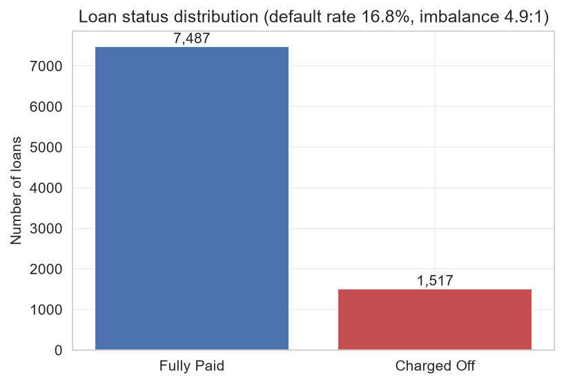
风险因素
除 open_acc 外，每个数值特征都以高显著性（p < 0.001）区分违约与还清，但在 9,000 行上显著性太容易达到，所以有用的筛子是效应量。按 Cohen's d，利率是唯一的大效应，循环利用率为中等，其余都很小，在册账户数则完全没有单变量信号。
| 特征 | 均值（还清） | 均值（违约） | Cohen's d |
|---|---|---|---|
| 利率 | 11.63 | 14.59 | 0.73 |
| 循环利用率 | 50.94 | 59.44 | 0.31 |
| 贷款额 | 11,967 | 13,895 | 0.23 |
| 年收入 | 71,110 | 62,012 | −0.19 |
| 6 个月征信查询 | 0.82 | 1.02 | 0.19 |
| 债务收入比 | 13.73 | 14.70 | 0.15 |
分类拆解比任何单一数字都更清楚。信用等级与违约率单调同行，从 A 档的 7.4% 一路爬到 G 档的 52.9%；期限是全数据最锋利的一刀，60 个月贷款违约率 32.4%，36 个月只有 11.3%。
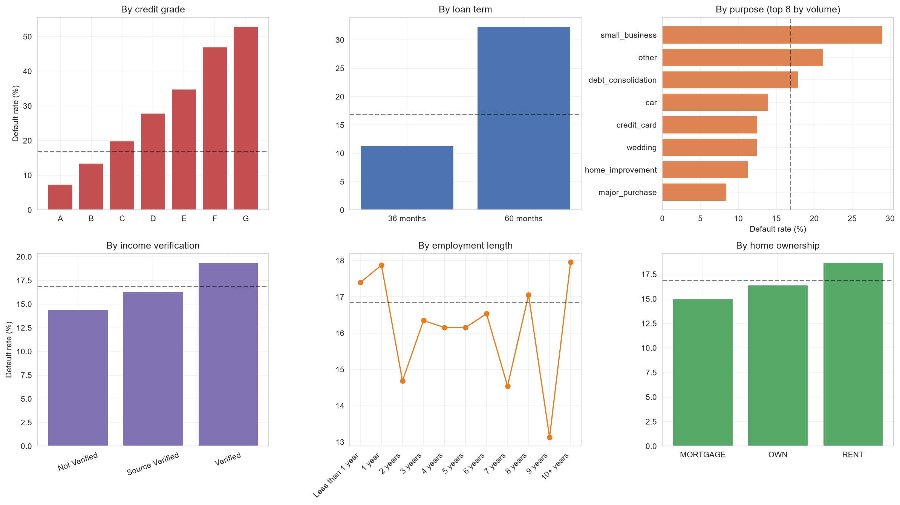
收入验证反着走：已验证借款人违约率 19.4%，高于未验证的 14.4%。平台向看起来有风险的申请人索要验证，这个字段记录的是怀疑本身，不能当放行信号读——这是一个典型的选择效应。
把连续驱动因素分桶，能看到关系的形状。违约率随利用率一路上行：20% 以下的桶 10.5%，80% 以上的桶 23.7%，中间没有任何回落，不存在「适度使用更安全」的保护带。收入反向，$40K 以下 20.5%，$100K 以上 11.1%。
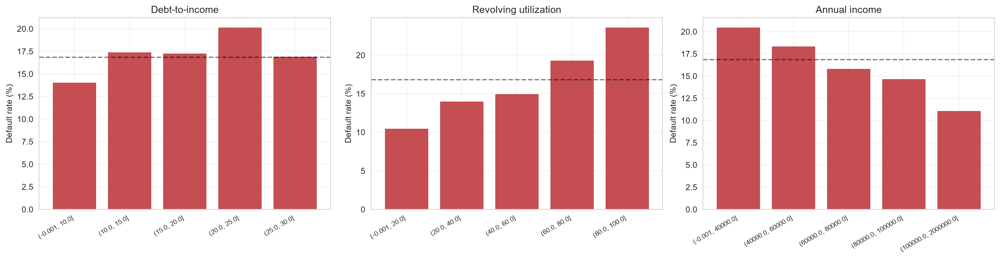
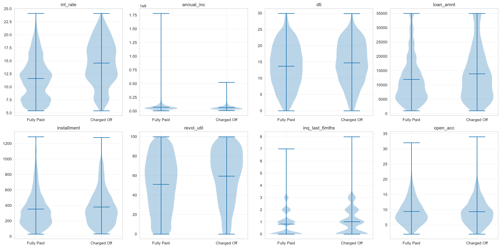
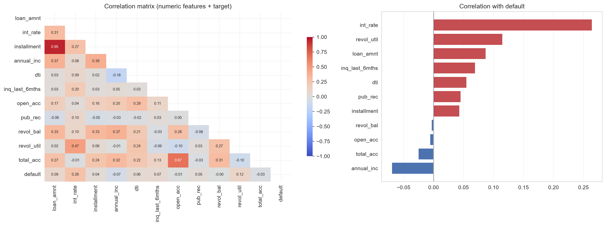
损失集中在哪里
数违约的笔数比只看违约率更能指向政策：E 至 G 三档只占 9.4% 的贷款，却贡献 22.0% 的违约，这条尾巴又细又贵。对它收紧政策，能不成比例地削掉损失。地理上，剔除不足 50 笔的州之后，内华达以 27.4% 领跑，对照组合均值 16.8%。
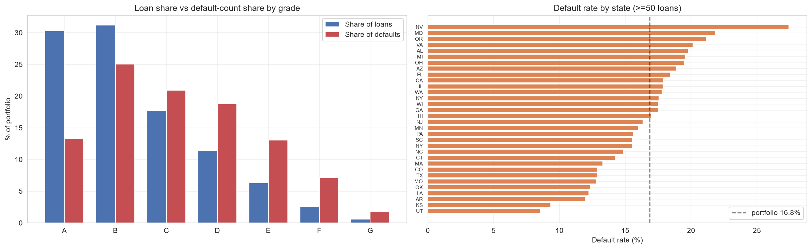
同一套协议下的模型对比
逻辑回归、随机森林、LightGBM 走同一套协议：剔除结果列；75/25 分层划分；高基数类别（addr_state、purpose）用交叉拟合目标编码器，只从训练折学习；SMOTE 放进流水线，合成样本绝不泄漏进验证；超参数用网格搜索按 average precision 选。训练集 5 折折外（OOF）预测既是调阈值的诚实概率，又能对照测试分数查过拟合——三个模型的测试分数都略高于折外，没有谁在背自己的折。
| 模型 | 阈值 | 召回率 | 精确率 | F2 | ROC-AUC | PR-AUC | 测试成本 |
|---|---|---|---|---|---|---|---|
| LightGBM | 0.16 | 74.9% | 26.9% | 0.552 | 0.733 | 0.372 | $2,627,872 |
| 逻辑回归 | 0.27 | 77.0% | 26.4% | 0.557 | 0.744 | 0.387 | $2,648,817 |
| 随机森林 | 0.19 | 79.9% | 25.4% | 0.559 | 0.733 | 0.372 | $2,715,463 |
召回率、精确率、F2 按各模型的成本最优阈值计算；ROC-AUC 和 PR-AUC 与阈值无关。PR-AUC 约 0.37，相对 0.168 的无技能基线是约 2.2 倍提升，是仅用放款时信息应有的真实水平。四个排序指标列全部由逻辑回归领先。
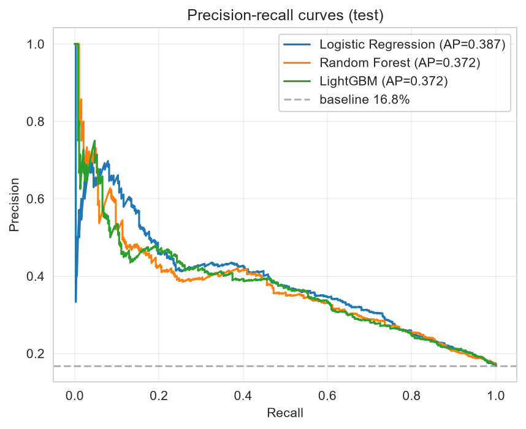
逻辑回归排序指标最好，随机森林召回最高，LightGBM 成本最低、精确率最高，三者成本相差不到 1%。bootstrap 检验下，LightGBM 与逻辑回归 $20,134 的平均成本差，区间横跨 [−$121,482, +$156,074]，LightGBM 只在 60.2% 的重采样中更便宜——两个模型在成本上统计不可分，怎么选是运营问题。LightGBM 按最低 OOF 成本入选，逻辑回归是站得住脚的可解释替代。
16.8% 的正类率下重采样不承重：保持超参数不变、只删 SMOTE 步骤重跑，折外指标最多动 0.010，方向还不一致（随机森林 PR-AUC 0.337→0.347，LightGBM 0.342→0.337，逻辑回归基本持平）。流水线对不平衡的适配发生在决策阈值上，SMOTE 留下只是因为超参数带着它调出来。
把阈值当业务决策来定
默认 0.5 阈值最小化的是分类错误，但两类错误代价并不相等。对每个模型，在折外预测上扫描 0.05 至 0.94 的阈值网格，成本函数为 FN 数乘 $9,437 加 FP 数乘 $2,243，约束条件是至少抓住 75% 的违约——漏掉四分之一以上违约的违约预测系统，成本再好看也没做好本职。模型按最低折外成本选出，测试集全程不参与选择、只读一次。
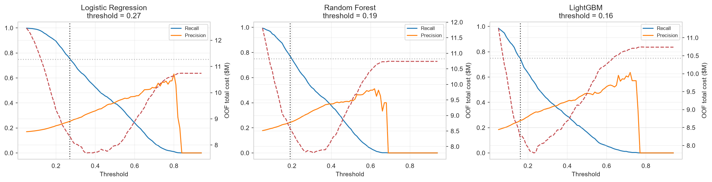
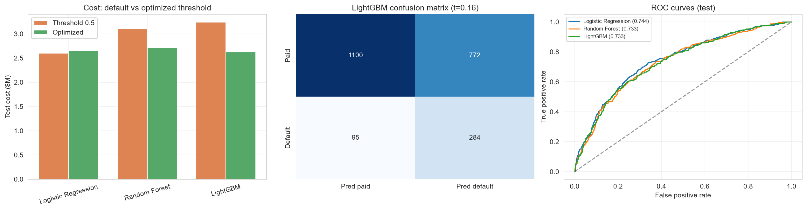
在阈值 0.16 下，LightGBM 抓住测试集 74.9% 的违约，精确率 26.9%，总错误成本 $2,627,872。全批放款成本 $3,576,469，所以模型把预期损失压低了 26.5%。低精确率是有意为之：在 4.2:1 的成本比值下，多标三笔好贷换一笔违约是更便宜的错误——被标记的贷款进人工复核队列，而非直接拒绝。
头条数字全部来自一个 2,251 笔的测试集，对预测做 2,000 次有放回重采样、不重训，给每个数配上宽度：ROC-AUC 0.733 [0.706, 0.760]；PR-AUC 0.372 [0.325, 0.422]；召回 74.9% [70.5%, 79.2%]；精确率 26.9% [24.3%, 29.5%]；相对全批准的成本降幅 26.5% [18.8%, 33.2%]。没有一个区间算窄，也没有一个跨过会改变决策的水平。
规则基线与复核负担
26.5% 的对照物是「全批准」，但没有放贷机构真的全批。更公平的对照是审批员不用模型也能执行的规则：E 至 G 档全拒，或 60 个月期限全拒。同一套成本函数、同一个测试集打分，仅期限一条规则就拿回了模型收益的大头。
| 政策 | 标记率 | 召回 | 测试成本 | 降幅 |
|---|---|---|---|---|
| 全批准 | 0.0% | 0.0% | $3,576,469 | 0.0% |
| 拒 E 至 G 档 | 9.2% | 21.9% | $3,071,332 | 14.1% |
| 拒 60 个月期限 | 24.7% | 48.0% | $2,700,037 | 24.5% |
| LightGBM（阈值 0.16） | 46.9% | 74.9% | $2,627,872 | 26.5% |
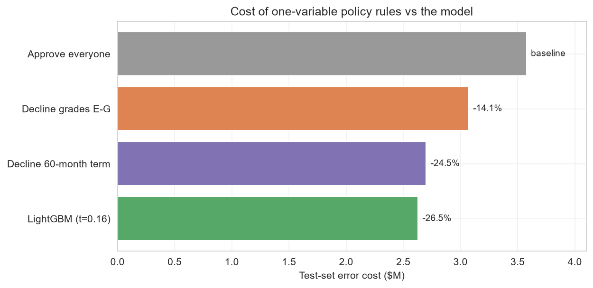
24.5 个百分点：模型多买到的是 2 个百分点的成本、26.9 个百分点的召回（74.9% 对 48.0%），以及在 60 个月产品线内部排序风险的能力，代替一刀切砍掉整条产品线。只按这套成本函数打分，简单规则完全可以辩护；要违约覆盖度、要继续做 60 个月贷款，就需要模型的排序。
被标记的贷款要交给人来审，标记率本身就是运营成本。测试集 2,251 笔申请标记 1,056 笔（46.9%），换来 74.9% 的违约捕获——将近一半的进件落到复核台上，只有复核便宜或高度辅助时才行得通，而它正是 0.75 召回下限的直接价格。
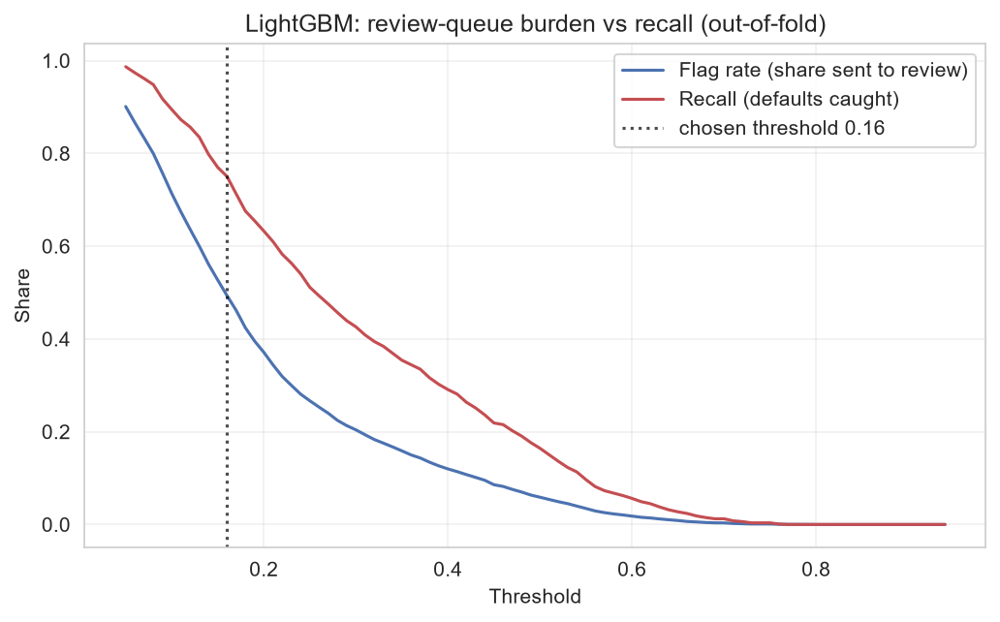
| 阈值 | 标记率 | 召回 |
|---|---|---|
| 0.16 | 46.9% | 74.9% |
| 0.20 | 37.1% | 63.3% |
| 0.25 | 26.7% | 51.1% |
| 0.30 | 20.4% | 42.6% |
第一行是测试集操作点，其余为折外读数。
75% 的召回下限是政策输入，不是估计值，任何重新谈判都从这条曲线出发。如果复核容量才是硬约束，定阈值的就是这张表，不是成本函数。
贷款为什么违约：SHAP 归因
审批员解释不了的分数，到被拒的申请人面前是站不住的，所以对选定的 LightGBM 在原始单位特征上做 SHAP 归因。按平均绝对 SHAP 排序：期限 0.453 居首，年收入 0.251、等级 0.211、近期查询 0.179、用途 0.157 随后。四个衍生特征有两个进前八：等级期限交互 0.142，财务压力指数 0.111。
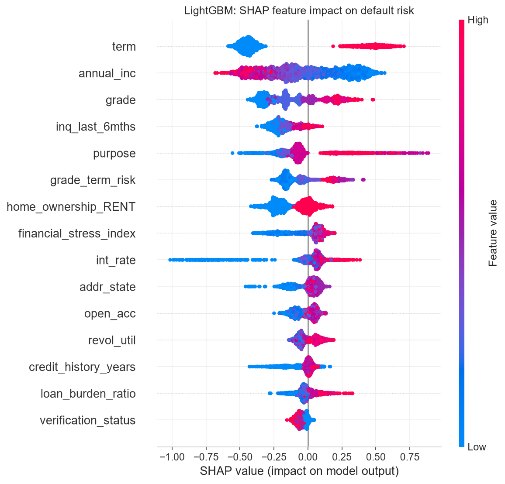
利率是抬高风险的。它的平均带符号 SHAP 几乎为零，读起来像「没有影响」，但这个统计量掩盖了方向。依赖图说的是另一回事：利率与自身 SHAP 值的相关是 +0.55，利率越高预测风险越高，与第 02 节 d = 0.73 的差距一致；高利率贷款上的正推力和低利率贷款上的负推力在均值里刚好抵消。
利用率没有保护性中间带。利用率全程推高风险，与没有保护带的形状对上。收入（−0.83）与等级（+0.91）表现如预期，压力指数为正（+0.75）。
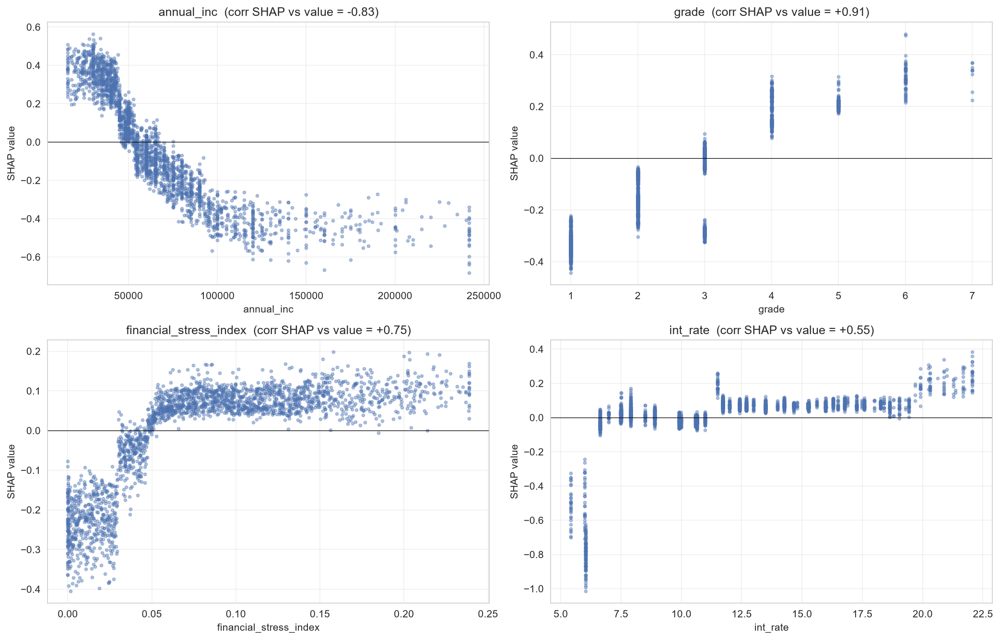
建议与局限
| 措施 | 怎么做 | 分析依据 |
|---|---|---|
| 按成本最优阈值打分 | 新申请过 LightGBM 模型，阈值 0.16；被标记贷款进人工复核，不直接拒绝。 | 抓住 74.9% 的违约，预期损失比全批放款低 26.5%（净口径 6.6%）。 |
| 长期限贷款重新定价或设限 | 给 60 个月期贷款加风险溢价，或限制在更高等级。 | 60 个月期违约率 32.4% vs 36 个月期 11.3%；期限是 SHAP 首位驱动因素。 |
| 收紧低等级尾部 | 对 E 到 G 级加强复核或设硬性门槛。 | 占 9.4% 的贷款却贡献 22.0% 的违约。 |
| 别把验证当放行 | 不因收入已验证就降低审查。 | 已验证贷款违约率更高（19.4% vs 14.4%），是选择效应。 |
前文每个美元数字都压在同一个标定选择上：漏判一笔违约记 $9,437 本金损失。可违约者坏账前也付过利息，记进来后净漏判成本是 $6,684，成本比从 4.2:1 变成 3.0:1。用净口径重推决策，标记名单没有任何变化、最优阈值原地停在 0.16；变的是能宣称省下多少，从 26.5% 掉到 6.6%。
| 口径 | FN 成本 | 成本比 | 最优阈值 | 测试降幅 |
|---|---|---|---|---|
| 头条口径：未收回本金 | $9,437 | 4.2:1 | 0.16 | 26.5% |
| 净口径：本金减已收利息 | $6,684 | 3.0:1 | 0.16 | 6.6% |
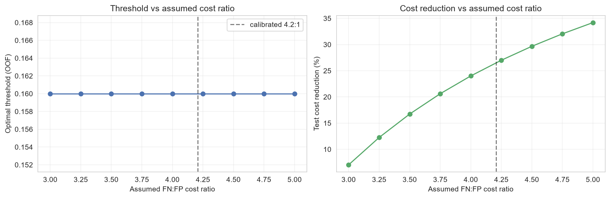
这是一份没有放款日期的已结清贷款横截面：做不了时间维度的验证，credit_history_years 是用固定参考日期算的近似值。利率本身已嵌入 LendingClub 自己的风险定价，所以它的一部分预测力反映的是平台在放款时编码进去的信息，而非独立的借款人信号。成本数字用的是组合平均的 FN/FP 成本（口径敏感性见上）；生产系统会对每笔贷款的敞口单独定价。仅用申请时点数据，这个组合上 0.73 至 0.74 的 ROC-AUC 就是现实的天花板；类似数据上宣称远高于此的结果，值得先怀疑泄漏。
复现说明
notebook 可在本地完整重跑（uv run jupyter nbconvert --to notebook --execute）。随机种子全程固定为 42，图表输出到 figures/。本报告并存两套成本口径：头条标定下省 26.5%，计入违约者已付利息的净口径下省 6.6%——两套口径下的标记名单完全相同，对外引用请取净口径。